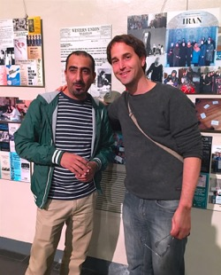
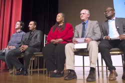

Friends,
Each year, the Fellowship of Reconciliation awards three peace prizes -- international, national, and local -- to individuals or organizations whose commitment to peace, justice, and reconciliation is recognized as extraordinary.

Raeed Hadar and Udi Gur from Combatants for Peace Palestine-Israel at Centennial Exhibit in NYC. |
Our inspiring awardees in 2015 were Combatants for Peace, working for nonviolent solutions between Israel and Palestine; social justice workers Ruby Sales and Cheryl Blankenship of the SpiritHouse Project in Atlanta, Georgia; and the Peace and Justice Action League of Spokane, Washington for their local social justice work.
And we just received word that Nonviolent Peaceforce, winner of FOR's 2007 International Peace Award, was nominated for the 2016 Nobel Peace Prize by the American Friends Service Committee and Quaker Peace and Social Witness (both previous laureates). We're excited to see them in the running -- and this means that your nomination for an FOR Peace Prize today could lead to a Nobel in the future!
Nominate your favorite individual or organization working for peace by Friday, April 15.
Celebrating a century of work for peace and justice

Udi, Raeed, Cheryl Blankenship, Mark Hamlin of PJALS, and Lucas Johnson of IFOR on the stage at Riverside Church Gala Dinner awards presentation. Lucas was one of the presenters. |
We're starting the nomination process early this year so that we may present our peace awards at the Fellowship of Reconciliation Centennial and 58th Pacific Northwest Regional Seabeck Conference, July 1-4 of this year.
We'll be recognizing award-winners in three categories:
- International Pfeffer Peace Award: Honors those around the world working for peace and justice. Established in 1989 by Leo and Freda Pfeffer, who died in November 2013, and whose memory we honor.
- Martin Luther King Jr. Award: Recognizes those working in the United States to further the Rev. Dr. King's nonviolent approach to transforming racial, social, and economic injustice. Established by FOR in 1979.
- Local Hero Award: Formerly the Nyack Area Peace Award, established in 2006, which recognized folk working for peace and justice in the vicinity of FOR's national headquarters. In 2015, we changed this award so it now celebrates an individual or organization working to promote peace and justice within their own local community anywhere in the United States.
Make a nomination for the FOR Peace Awards today!
There is no requirement that you or the nominee have any affiliation with the Fellowship of Reconciliation, so please share this announcement with your networks of peace and justice advocates!
Ruby Sales speaking from the floor at the Centennial Gala Dinner. |
Need some inspiration? Check out our list of past award winners.
Join us for the awards celebration
This year is extra-special because the Peace Awards will be awarded in Washington state, at the conclusion of our year-long celebrations of FOR's 100th birthday. And you can be a part of it!
Please join us at the FOR Centennial and 58th Pacific Northwest Regional Seabeck Conference, this July 1-4 in Seabeck, WA.
And don't forget to make your Peace Award nomination before April 15!
 Meredith Nicolich Meredith Nicolich
Peace Awards Coordinator
Fellowship of Reconciliation
Photos © Carolina Kroon. |